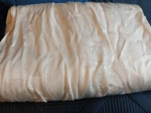
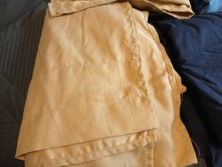
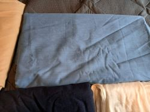
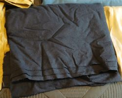

Historic textiles
After finding inspiration and making a solid plan for your dream outfit, the next step is to find the materials. Depending on your desired place in the world and time, this can differ slightly. But a lot of historically accurate clothing is made with natural fabrics like wool, linen, and cotton. If your dream persona is of nobler lineage, you may have the opportunity to use fabrics like taffeta, silk, and velvet. For belts, shoes, bags, and other accessories leather would be a good option.
And if not the “historical textiles”?
Sometimes, these fabrics can get pricy, especially in the quantity you may need. If this is the case, do not fear. We have been given fabrics with similar feel, weight, and effect as the natural stuff. These can be an affordable alternative that still gives you the historically accurate look and feel we’re going for. Here is a list of common alternatives:
Wool: Acrylic, Polyester fleece, Cotton flannel
Linen: Cotton-linen blend, Cotton muslin, Rayon
Taffeta: Polyester taffeta, Polyester satin, Cotton poplin
Silk: Satin, Polyester, Cotton sateen
Velvet: Velour, Microfiber
Never underestimate thrifting
If you are still concerned about cost and keeping this project budget (or hobby) friendly, there are still options out there! I have gotten most of my fabric second-hand, whether it be from family members or thrift stores. Many curtains, table clothes, and bedding are actually made from the perfect, budget-friendly material we need! I am lucky enough to have an aunt that does a lot of sewing and historical costuming, and who has graciously gifted me with most of the fabric I’m using for my project. But I have also found fabric while thrifting. Here are the fabrics for my current project:



